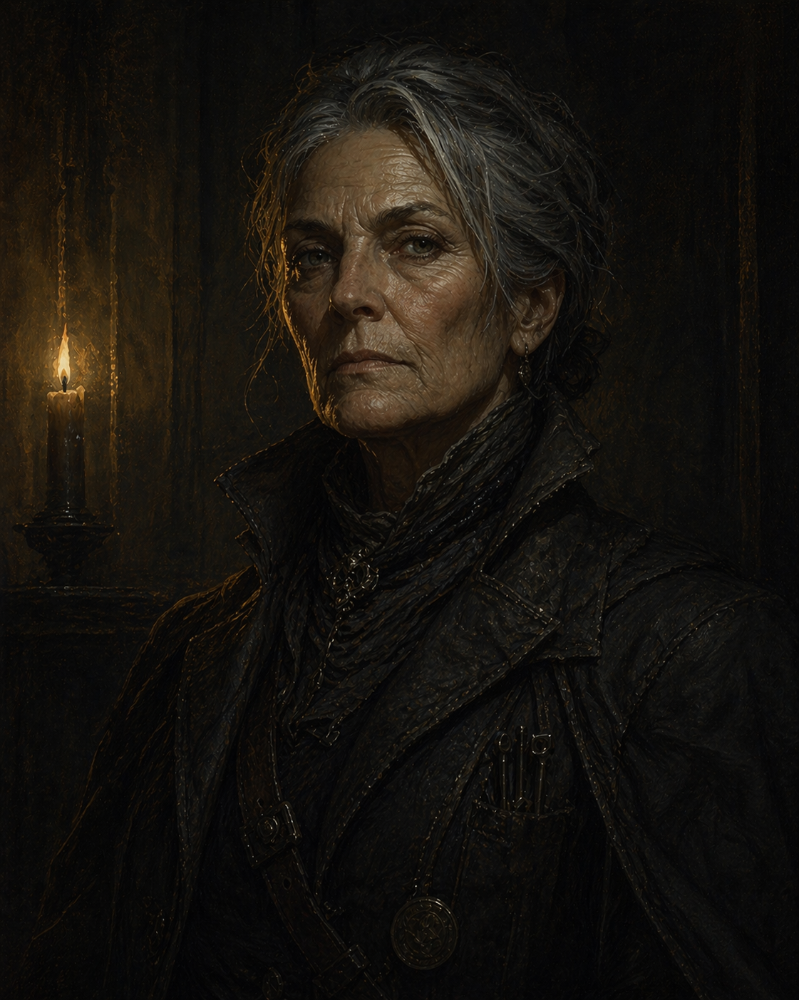

Costya — Zivanka Bogdanov
She touched the train token. Since then, the visions haven't stopped.
Reference: Spies, Soldiers & the State ?
Player: Aspen
Background
- Full name: Zivanka Bogdanov
- Skovlan descent — military background
- Spy background — surveillance, tracking, information gathering
- Touched the train token early on — opened a supernatural bond that hasn't closed
- Was already aboard the ghost train when the others entered in Session 3 — drawn there by the token's pull
Vice — Stupor
Relaxing the vigil entirely — switching off the awareness that military life and spy work have made permanent. Hard drink, drugs, dreamless sleep by whatever means necessary. For someone who now also receives uninvited visions, the need to go quiet is more acute than most.
Not yet established.
Friend & Foe
An assassin. The kind of contact that makes sense when you come from the military and the intelligence world. How they met and what they owe each other hasn't been established yet, but the trust is real.
A spy. Given Costya's background, this is almost certainly a professional rivalry or betrayal — someone from the same world who ended up on the opposite side of something. Details TBD.
What the Crew Has Heard
- Has been seen talking to herself in tongues.
- Carries a bag of dog tags.
- Chants to herself in a foreign language.
Character Sheet
?????????
??????
| Level 1 | Heed the Call | — |
| Level 2 | — | — |
| Level 3 | — | |
- Sharpshooter — You can push yourself to make a ranged attack at extreme distance or unleash a covering barrage. You may use a ranged weapon to Hunt when taking a called shot.
| Hunt | ???? | Insight |
| Survey | ???? | Insight |
| Prowl | ???? | Prowess |
| Attune | ???? | Resolve |
The Token Connection
The token didn't just grant access to the ghost train — it opened something in her. She has seen six figures draped in finery standing at the edge of dark water, something vast and horrible moving beneath them. She has seen a city drowning from the inside. These aren't controlled or comfortable. They arrive unbidden, and they're getting harder to dismiss. Given the rumors about chanting and speaking in tongues, the crew may already sense that something about her has shifted.
Visions Received So Far
- The ghost train — clearly, before the others summoned it
- Something in the black water outside the train windows (Session 3)
- Coming: During the escape from the ghost train, she likely saw the original negligent loading — the nobleman signing the order, his ring visible with a crest she may or may not have recognized
The Watcher's Interest
The Watcher speaks to her most directly. In the Sunken Temple, it will show her the harbor from below — the compact working, then failing. The city flooding from the inside. She will understand the stakes more viscerally than anyone else in the crew.
Connections
- Steiner — friend; an assassin; trust established, history TBD
- Velenis — foe; a spy; professional history, likely a betrayal somewhere in it
- The Train Token — the source of her visions; she's linked to it in a way the others aren't
- The Watcher — primary supernatural contact; addresses her specifically
- The Six Houses — her visions connect her to the compact's history; she may recognize bloodlines before others do
Moments to Create
- The Sunken Temple: the Watcher speaks to her in images — stakes made explicit, for her first
- A vision that gives the crew actionable intelligence before they'd otherwise have it
- A vision that's wrong, or misleading — the visions show truth but not always context
- What the dog tags are from — and whether she'll ever talk about it
- Velenis surfacing — spy versus spy, on unfamiliar ground
- The question of whether she can choose not to see, or whether the token has claimed that choice